La aplicación publica los castings abiertos de películas, cortometrajes y otros proyectos, y permite que cualquier persona interesada se inscriba enviando sus datos y su material (fotos y vídeo). El panel de administración concentra la gestión: creación de castings, revisión de cada inscripción y cambio de su estado.
La página principal muestra únicamente los castings que están en estado abierto. Cada ficha incluye el tipo de proyecto, el título, una breve descripción y la fecha de cierre de la convocatoria. El botón Inscribirme lleva al formulario de ese casting concreto.
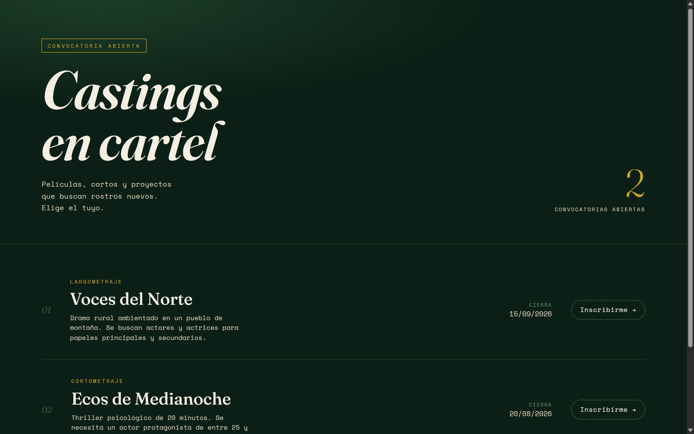
Al pulsar Inscribirme se abre la ficha del casting con el formulario de inscripción. Se solicitan los datos personales (nombre, email y teléfono), la ficha física (fecha de nacimiento, altura y medidas) y el material de presentación (fotos en formato jpg o png, y un vídeo en formato mp4). El botón Enviar inscripción confirma el envío.
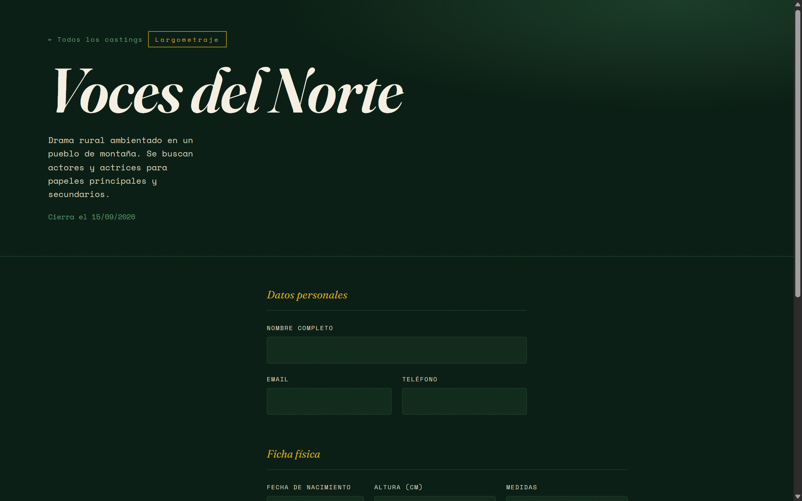
La parte inferior del formulario recoge la ficha física y permite adjuntar las fotos y el vídeo de presentación antes de enviar la inscripción.
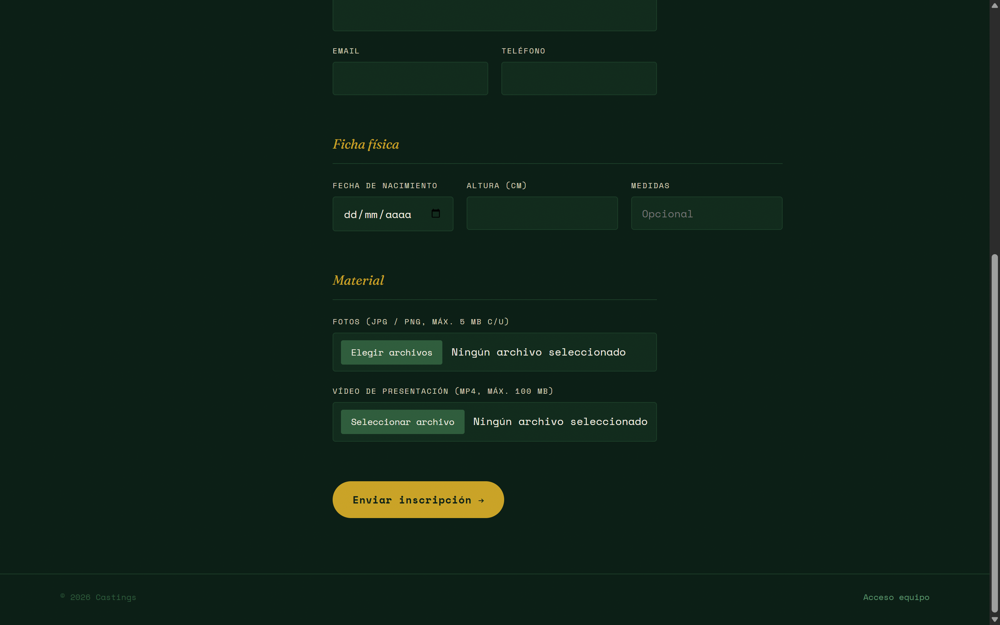
El enlace Acceso equipo, situado en el pie de la landing, lleva a la pantalla de acceso del panel. Se solicitan el usuario y la clave del equipo administrador.
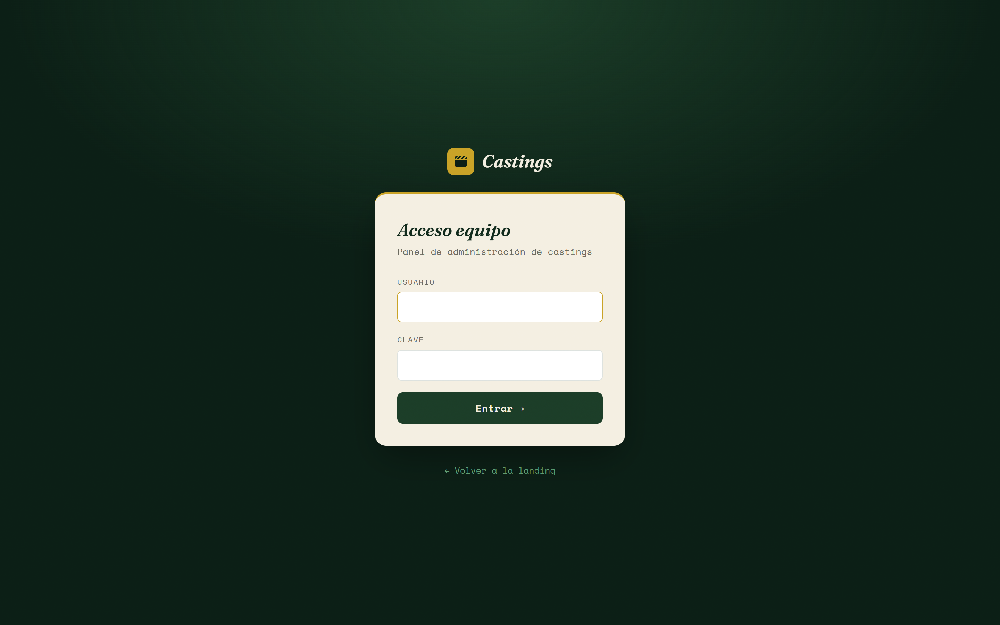
Tras acceder, el Dashboard muestra un resumen: número de castings abiertos, inscripciones pendientes de revisión e inscripciones totales. Debajo se listan los castings abiertos, las inscripciones pendientes agrupadas por casting, y las últimas inscripciones recibidas, cada una con enlace directo a su ficha.
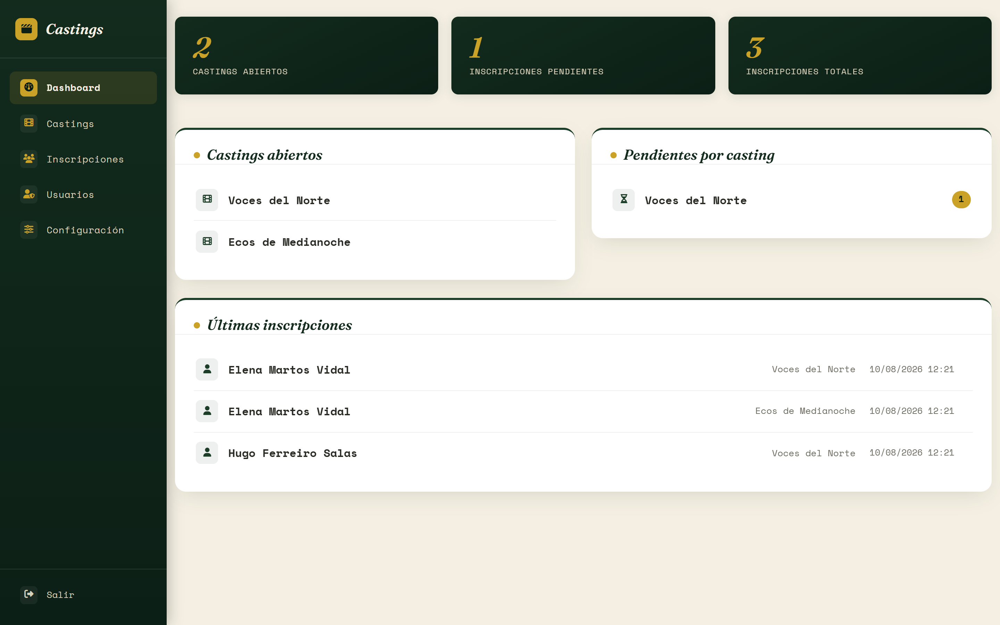
El apartado Castings lista todos los castings creados, abiertos y cerrados. Incluye un buscador por título o tipo y un filtro por estado. El botón Nuevo casting abre el formulario de alta; el enlace Editar de cada fila abre su ficha.
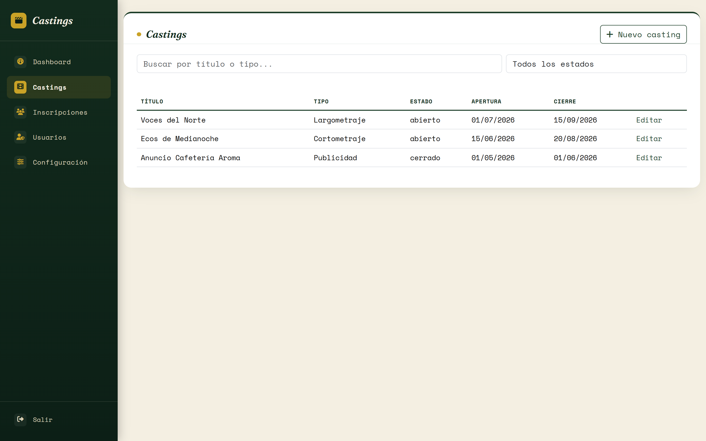
El buscador filtra la tabla al escribir, sin recargar la página. El ejemplo siguiente muestra el resultado de buscar por «medianoche».
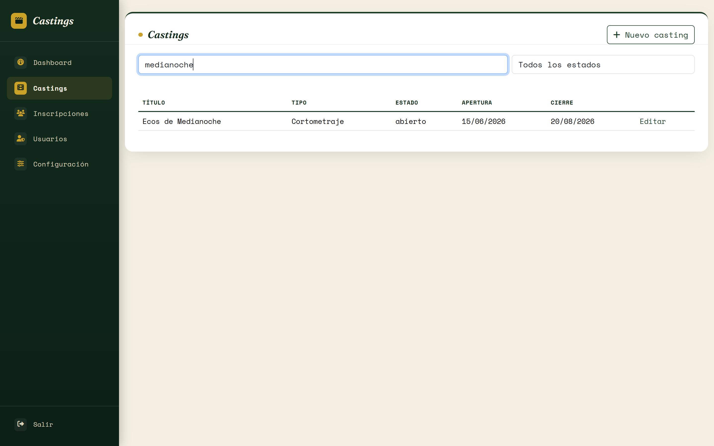
La ficha de un casting permite editar sus datos y, en la columna lateral, muestra las personas inscritas en ese casting concreto con su estado actual. El enlace de cada persona lleva directamente a su ficha completa. El botón Eliminar, en la parte inferior, borra el casting tras confirmar la acción.
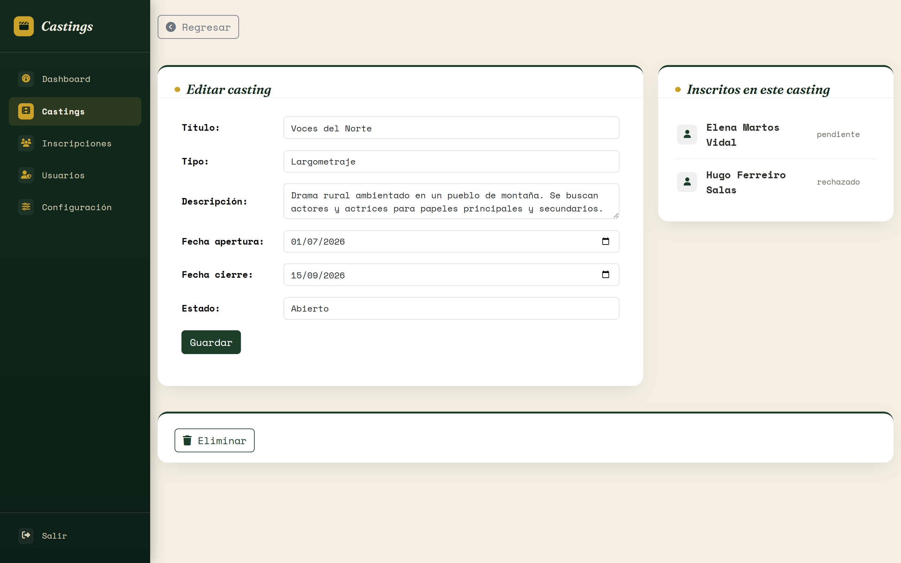
El apartado Inscripciones lista a las personas inscritas, una fila por persona. La columna Castings indica en cuántos castings distintos está inscrita cada una. El buscador filtra por nombre, email o teléfono; los dos desplegables filtran por casting concreto y por estado. El email de cada fila abre directamente un correo, y el teléfono abre una conversación de WhatsApp.
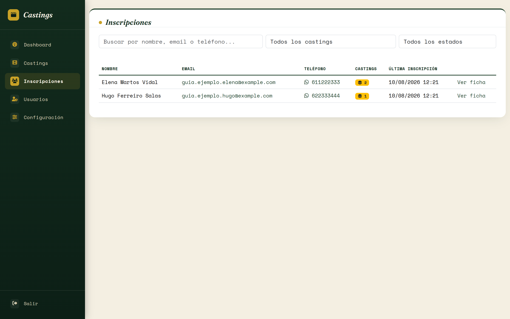
La ficha de una persona muestra sus datos (email, teléfono, fecha de nacimiento y edad calculada, altura y medidas) y, en la columna lateral, la lista de castings a los que se ha inscrito con el estado de cada inscripción.
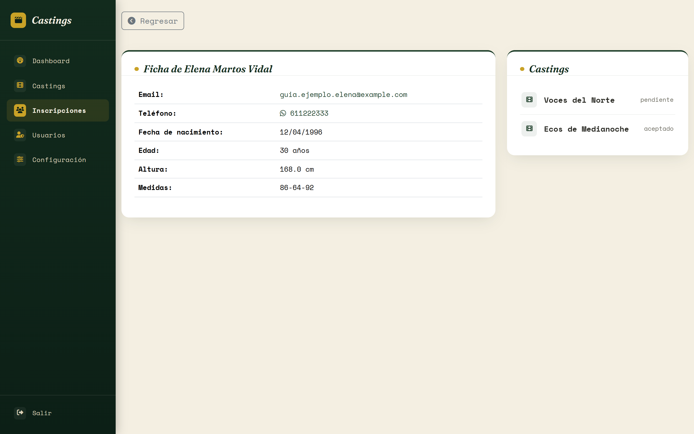
Al pulsar sobre uno de los castings de la lista lateral se despliega su detalle: fecha de inscripción, selector de estado con su botón Guardar, y el material adjuntado (fotos y vídeo) para ese casting en concreto.
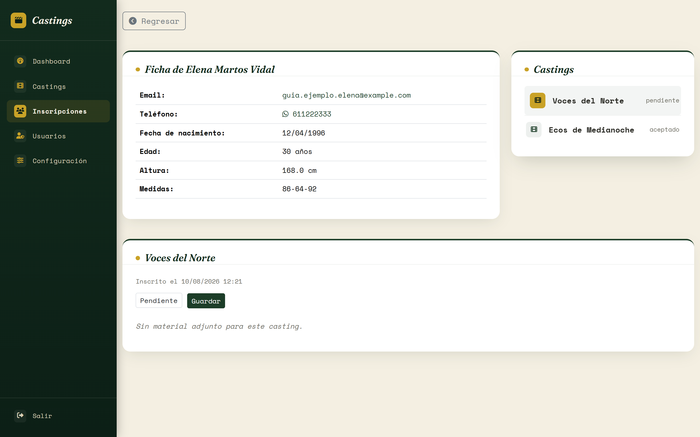
El apartado Usuarios lista las cuentas con acceso al panel y sus intentos de acceso fallidos. El botón Nuevo usuario da de alta una cuenta adicional; el enlace Editar permite cambiar el nombre de usuario o la clave. No se puede eliminar el único usuario existente ni el usuario con el que se ha iniciado sesión.
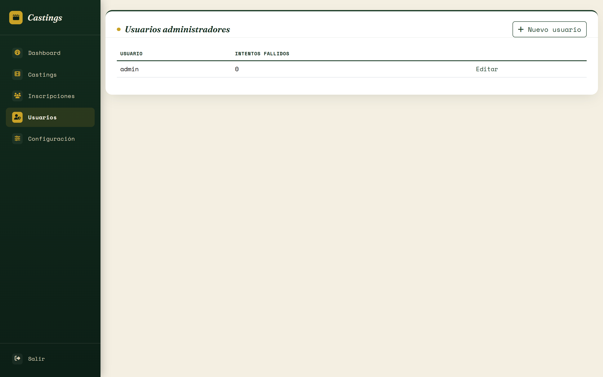
El apartado Configuración reúne los datos generales del sitio: nombre, email de contacto y texto del pie de la landing. El botón Guardar aplica los cambios.
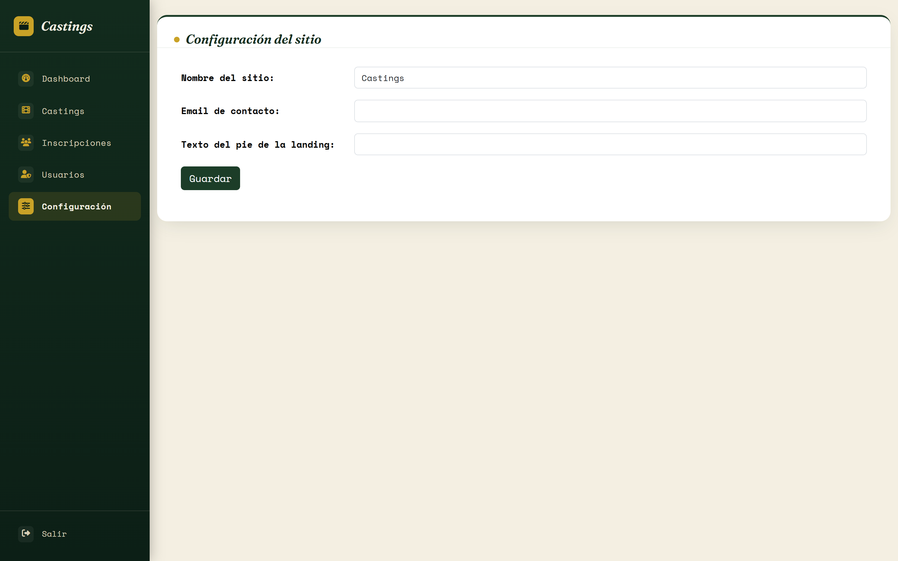